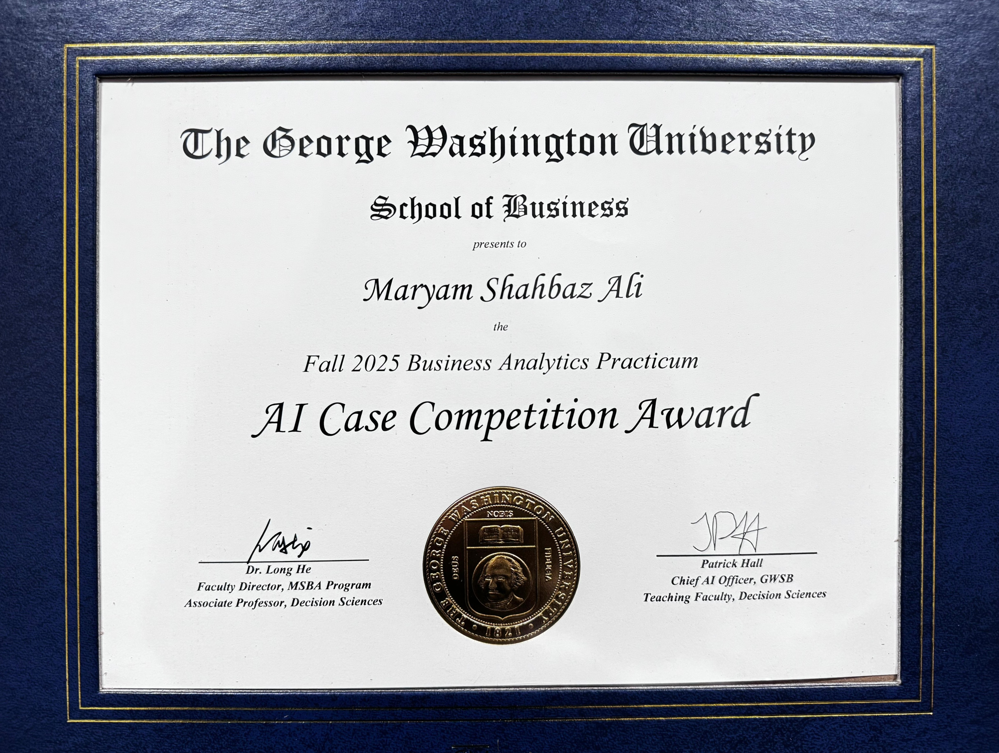

Building Intelligent, Responsible & Impactful Solutions
Featured by
The George Washington University for applied analytics and responsible AI work
Building trustworthy AI systems that combine machine learning, explainability, and real-world impact.
I'm a Machine Learning and Data Science professional passionate about building AI systems that are accurate, interpretable, and impactful. My work spans predictive modeling, Retrieval-Augmented Generation (RAG), large language models, explainable AI, and modern data engineering, with a focus on developing responsible AI systems that support transparent and trustworthy decision-making.
At Children's National Hospital, I contribute to clinical AI research by developing and evaluating a Retrieval-Augmented Generation (RAG) pipeline for differential diagnosis. The system integrates FAISS vector search, domain-specific medical embeddings, structured medical knowledge graphs, and locally deployed large language models through vLLM to improve clinical reasoning and retrieval quality. This work focuses on advancing reliable AI-assisted clinical decision support while exploring future multimodal capabilities.
Previously, at The George Washington University, I developed an award-winning AI decision-support system that combines Explainable Boosting Machines (EBM), SHAP, and Retrieval-Augmented Generation (RAG) to deliver transparent, analyst-facing fraud investigations. This experience strengthened my interest in building AI systems that are both high-performing and explainable.
My experience includes designing end-to-end machine learning solutions, building and evaluating RAG systems, developing interpretable and bias-aware models, forecasting business outcomes, and translating complex data into actionable insights across healthcare, finance, and operational analytics.
My journey into AI began after seeing the impact of data-driven decision-making while working at Coca-Cola and continued through founding The Squat Junkie, where I applied analytics, experimentation, and predictive modeling to grow a fitness venture. These experiences reinforced my belief that the most valuable AI systems combine technical excellence with measurable real-world impact.
Built an interpretable fraud-analysis assistant to help analysts understand why transactions are flagged. FraudLens combines a surrogate Explainable Boosting Machine (EBM), SHAP explanations, and a TF-IDF–based RAG knowledge layer to translate model behavior and rule-based fraud signals into clear, human-readable narratives for faster, auditable review workflows.
Designed and deployed a full-stack explainable AI decision-support platform that transforms complex medical logistics data into real-time, interpretable operational insights. The system enables healthcare teams to proactively identify supply chain risks, inventory shortages, and operational bottlenecks through transparent machine learning predictions.
Built a microservice-based architecture using FastAPI, React, PostgreSQL, Docker, and NATS messaging, with Explainable Boosting Machines (EBM) providing interpretable risk scoring and feature-level explanations for every prediction.
Developed interpretable models to evaluate and remediate bias in decision outcomes. Used EBM and SHAP with fairness metrics (AIR) to balance predictive performance with transparency and responsible model use.
Built a CECL-aligned credit risk framework using macroeconomic indicators (GDP, unemployment, home prices, delinquency rates) to estimate lifetime expected credit losses. Applied ARIMAX models, scenario analysis, and backtesting to balance predictive accuracy with interpretability and regulatory alignment.
Code and data not publicly available due to academic and data constraints.
Built an end-to-end SQL and Python pipeline on AWS with Power BI dashboards to identify demand patterns, underserved regions, and expansion opportunities using store performance and geographic insights.
Forecasted daily bike demand using trip and weather data to support planning and resource allocation. Applied PCA and regression models with cost-based evaluation; LASSO achieved RMSE = 4.40 and R² = 0.85.
I validate ideas through experimentation, benchmarking, and measurable improvements rather than assumptions.
I prioritize explainability, fairness, and transparency when developing machine learning and AI systems.
I enjoy taking projects from research and modeling to APIs, user interfaces, and deployable applications.
I work closely with researchers, clinicians, and technical teams to build practical AI solutions for real-world problems.
The George Washington University School of Business · Fall 2025

Awarded for an outstanding Business Analytics Practicum project focused on building an interpretable, analyst-facing AI system for decision support.
Issued by Google | 2024
Mastered analytics fundamentals, audience segmentation, and reporting insights.
Issued by Google | 2024
Learned data manipulation, visualization, and statistical modeling using R.